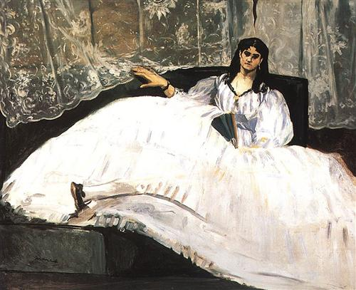
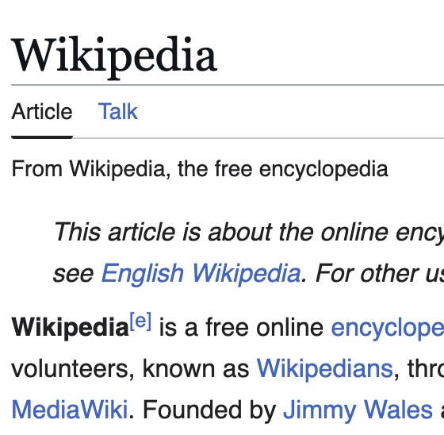
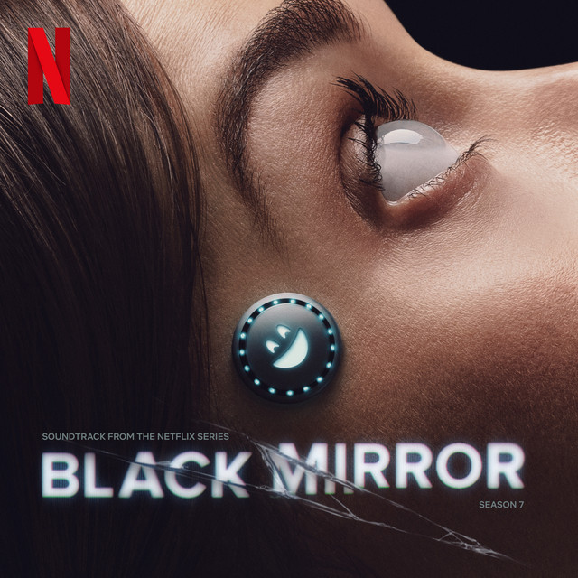
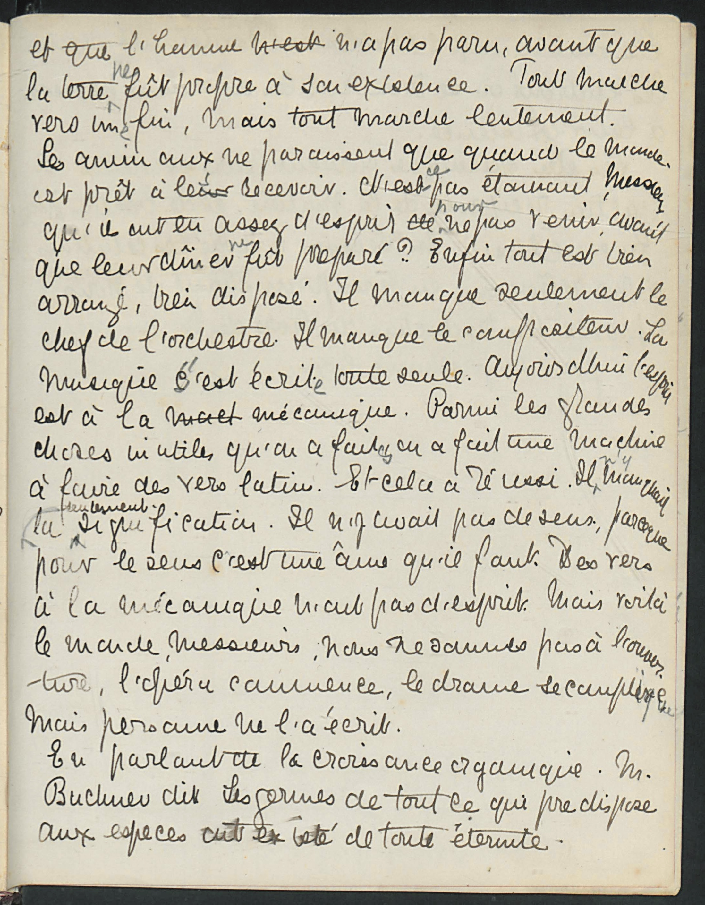

Jeanne Duval Archive. Role: Director. (Research) (Public Humanities)
A digital archive that collects and contextualizes contemporary and postcolonial art and literature about Jeanne Duval—a creole Haitian woman in the 19th century who was disregarded by academia due to her fraught relationships with white and male artists and writers in Britain and France. Includes multiple genres (novels, poems, plays, films, paintings, photography, songs, etc) and languages (English, French, Spanish, Italian, Cantonese, Russian, and more).
(Note: the archive has completed its data collection phase. It is anticipated to soft-launch on Omeka in Spring 2027.)

Meet Cutes. Role: Director. (Teaching)
Playing with the slang phrase "Meet Cute" (when two people meet for the first time in an adorable way), Meet Cutes shares student work from my ENGL 2475 Global Asian Aesthetics course at the University of Iowa. One category we examine is "cuteness." Here, students draw from research in Cute Studies and their lived experiences to introduce a carefully curated set of objects, explain why they find these objects "cute," and analyze how they possess unique cultural power.
(Note: the first edition of the website will launch in Fall 2026.)
Brontëgram. Role: Director. (Teaching)
What if the characters in 19th century novels also had social media? Brontëgram shares student work that reimagines app profiles (eg. Tinder, Reddit, etc) for the characters in the novels of my ENGL 3339 Global 19th Century Literature course at the University of Iowa. It also offers resources for instructors and students who want to adapt the assignment for their own classrooms. In Fall 2025, we examined Charlotte Brontë's Jane Eyre. In Fall 2026, we will examine Emily Brontë's Wuthering Heights.
(Note: a revised edition of the website will launch in Fall 2026.)

Special Issue in Volupté: An Interdisciplinary Journal of Decadence Studies. Role: Guest Co-Editor (with Sandra Leonard). (Research)
I am guest co-editing a special journal issue themed around Digital Decadence with Sandra Leonard. The projected publication date is December 2027, and the CFP is forthcoming.

Journal article in Humanities. Role: Author. (Research)
In 2026, I published a journal article titled Global Neo-Decadence, Postcolonialism, and the Hyper-Digital Hysterical Sublime of Late Capitalism." The article examines two short stories set in Iran and Peru in the Neo-Decadence Evangelion anthology. Both stories explore how late capitalism and digital technologies (such as online streaming culture) shape 21st century life after western imperialism—for better and for worse.

Journal Article in The Journal of Interactive Technology and Pedagogy (JITP). Role: Author.(Research) (Teaching)
In 2020, I published Using Wikipedia in the Composition Classroom and Beyond: Encyclopedic “Neutrality,” Social Inequality, and Failure as Subversion," based on the Wikipedia Edit-A-Thons that I hosted for the students in my digital writing course at the University of Virginia. I focus in part on the racial politics shaping the competing narratives about how the university was founded under the direction of Thomas Jefferson.

Wikipedia Edit-A-Thon. Role: Co-Organizer. (Teaching) (Public Humanities)
With Lane Rasberry (University of Virginia's Wikimedian in Residence), I co-organized two Edit-A-Thons in Fall 2019 and Spring 2020 for the students in the digital writing and composition course that I taught at the University of Virginia. The first event asked students to conduct research and write entries on Wikipedia about Black history and culture in Virginia. The second asked students to research and write entries about student activism in Virginia.

Digital Writing and Composition Course. Role: Instructor of Record. (Teaching)
In Fall 2019 and Spring 2020, I taught an ENWR 1510 Writing and Composition course at the University of Virginia, centered around the theme of digital writing. It focused on Instagram, Wikipedia, and the Netflix series Black Mirror. Final assignments: transforming personal essays into Instagram narratives or podcast episodes; conducting academic research to write accessible entries in Wikipedia Edit-A-Thons; close-reading analyses comparing ethical concerns around technology in Black Mirror episodes with critical theories about power and surveillance.
Art+Feminism WikiProject. Role: Contributor. (Research) (Public Humanities)
In 2016, I participated in the Art+Feminism WikiProject workshop at the Guggenheim Museum in New York City. The project focused on writing new entries about women artists on Wikipedia based on an exhibit at the museum. My Wikipedia user profile is Palimpsestic.
New York University Center for Data Science (CDS). Role: Content and Social Media Manager. (Research)(Public Humanities)
From 2016-2018, I worked part-time and then full-time for CDS. I attended research seminars and read the faculty's published papers about AI and NLP (Natural Language Processing), and translated their research findings into accessible terms for communications teams at NYU as well as the public. I managed CDS's web content and its social media platforms (Facebook and Twitter) and supervised an undergraduate intern.

Michael Field Diaries Project. Role: Lead Transcriber (Research)
In 2016, I transcribed and digitized 100 pages from a manuscript diary belonging to "Michael Field"—the shared pseudonym of two British and queer women poets in the 19th century, Katherine Bradley and Edith Cooper. I used TEI (Text Encoding Initiative - an XML language) to encode the transcriptions so that they are machine readable for the The Diaries of Michael Field project.
Web Design. Role: Coder.
I like designing websites using HTML, CSS, and JavaScript. I see websites as expressive digital art forms in and of themselves, not merely containers for content. I have experience writing my own code and using CMS platforms such as WordPress, Omeka, SquareSpace, and Wix. I also have working knowledge of Python programming to write simple scripts. My GitHub repo for this website is here: @cherriekwok